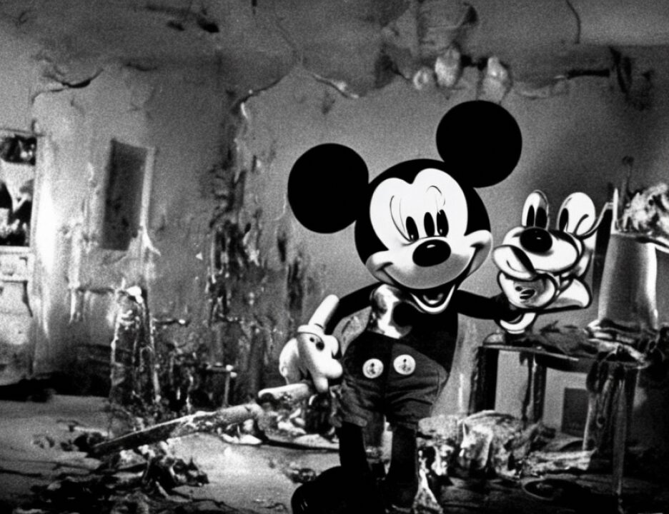

14 A. I went to Ngala.
15 Q. Ngala up country in Kenya?
16 A. No.
17 Q. If you could repeat the last answer? You said: I went
18 Ngala?
19 A. It's a town within Nairobi.
20 Q. At the scene of the bombing did you receive any injuries
21 to your hearing?
22 A. Yes.
23 Q. Now, after you left the embassy bombing scene did you come
24 back to work the next week?
25 A. Yes.
2139
1 Q. And had you seen anything that you recognized during the
2 course of over the weekend before you went back to work?
3 A. I saw on the newspaper the person who came out from the
4 car.
5 Q. You saw a picture of the person that you believed came out
6 from the car in the newspaper?
7 A. Yes.
8 Q. Do you recall what day that was?
9 A. Was on Saturday the following day.
10 Q. And when you went back to work did there come a time when
11 you spoke to the FBI about what happened?
12 A. Yes.
13 Q. And did you give a description of the person that you saw
14 get out of the truck and throw the things that exploded?
15 A. Yes.
16 Q. And what do you recall the person looked like?
17 A. He looked like an Indian.
18 Q. And can you describe his build? Was he thin or heavy?
19 A. Was thin.
20 Q. Tall or short?
21 A. Was medium, medium size.
22 Q. Do you recall how tall he was?
23 A. About five inches and, five foot and two inches.
24 Q. Do you recall what color hair he had?
25 A. Black.
2140
1 Q. Do you recall if the person you saw on August 7th had a
2 beard or no beard?
3 A. Was no beard.
4 Q. Glasses or no glasses?
5 A. No glasses.
2